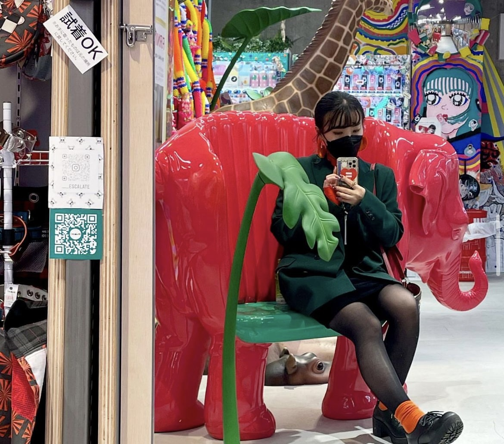

past
_____________________________________________________________________________________________________Q デザインに目覚めたきっかけを教えてください
Q 小学校のときの絵画コンクールみたいなのに何となく出したら結構賞もらえたりして、絵には自信があったのと 元々ディズニーが好きで、中学生の時に勉強の息抜きでディズニーのイラストを描くことが楽しくて、 勉強をしてりるとだんだん眠くなってきたりするけど無限に書いてられるなっていう自覚を持ち始めました。 そこで、ディズニーのデザインに携われることがしたいなと思い始めたのがきっかけです。
ディズニーの中でも好きなもの分かれると思うんですけど、 私は何よりもお土産を見るのがすごい好きで、なんかお土産とかディズニーのお土産のデザイナーになりたいという夢を中学生の時に持ち、 高校進学も普通の高校ではなく、美術の授業をたくさん履修することができる総合高校を選びました。
Q 大学入学後もディズニーのお土産のパッケージをしたいという思いは変わらなかったですか？
お土産やパッケージをやりたいっていうところはぶれなかったです ただ、「ディズニーの」という思いは、大学では無くなりました。
やっぱりキャラクターの商品ってすごい制限があり、自由に自分で編集したりとかできなくて、結構制限があったりするので、 何かせっかく大学に入って自分もいろんなデザインが作れるようになっていく中で 結構縛られることに窮屈さを感じ、なんかこのディズニーで1本で縛らなくてもいいなっていうふうに思い始めて ディズニーっていうのはもう大学自然と気づいたら消えて,お土産やギフトが残って今に至ってるっていう感じですね。
Q 大学時代で一番印象的な課題は何でしたか？
2年生のときに履修した「パッケージデザイン」っていう授業内で課された、「自然」というテーマでパッケージ作る課題です！ 結論から言うと種のパッケージを作ったんですけど、子葉の形が植物によって全然違う性質があることを知っていて、その性質を生かして制作しました。
この作品を「アジアパッケージデザインコンペション」に出品して2位に値する賞をいただけたという部分でも思い入れのある作品です。
この作品を通して、自分が思ってもないところでたまたま授業の知識とかが何か今になっていきたりすることがあるんだなっていうのはなんかすごいしみじみと思いました。 美術以外に理科や歴史だったりみたいな知識があることで生まれる作品ってあるんだなって思ってすごく思いました。
Q 就活の話を聞かせください。 パッケージの会社に絞って就活されていましたか？
パッケージデザインの会社って、商品の魅力を伝えることが一番に考えられてる商業的なパッケージをやる会社と 化粧品メーカーの資生堂やKOSEのように、おしゃれだったりスタイリッシュなパッケージをそのメーカーの中に入ってインハウスのパッケージデザイナーとして働くという 大きく分けて二パターンあると思っていて、
私は最初、後者のようメーカーに入って、化粧品系のように、おしゃれな方向のパッケージデザイナーやりたいって思ってたんですけど、
コロナの時期で、化粧品の売り上げが下がっていたりしていたこともあって、あんまり募集自分が入りたいな・やりたいなと思ってるデザインのテイストをやってるようなメーカーが募集をしてなかったこともあったので、
大学生大学4年生の時点ではそこに入ることはもう諦めて、
一旦いろんな幅広いパッケージデザインができる会社を探そうと思って、今の会社に内定いただいて入社したという感じです。
now
_____________________________________________________________________________________________________Q 今はどんなお仕事をされていますか？
アイスや飲料、冷凍食品のパッケージデザインをしています。
Q 1日の流れを教えてください。
定時は「9時半・18時半」で、お昼休みは時間が決まっていなくて好きなタイミングで取ってねというスタイルです。 9時半に出社したら、ひたすら自分が担当している案件のデザインをしています。 社内体制としてグループ分けされているので、各グループ内で11時と15時と16時に、作ってるデザインをあの見せ合うというのはあります。
イヤホンがOKな職場なので、音楽やラジオなどを聴きながら、黙って制作しているのでコミュニケーションとかあんまりない会社です。 18時半になったら、帰りたい人は帰ってって感じで、残業を強制されたりとかはないです。
Q 裕理さんのインプット方法を教えてください
スーパーやコンビニに行ったときに、売り場を見るということと、 アートブックフェアや海外の絵画作品を直接見に行くようにしています。
あとは、さっきも話したけど、後でこれがインスピレーションになったなと気づくことが多かったり、 なんとなく足を運んだ場所が後々インスピレーションになったりするので、 積極的に外に出たり、友達と話したり、旅行に行くようにしています。
最近はラジオで古典や歴史系を聴きながら作業していて、知識を入れるようにしています！
Q デザインスキルを上げるために普段意識していることはありますか？
自分の直感を信じることですね。 最近パーソナルカラーや骨格診断はやっているけど、それに従っていると 自分らしさを失うんじゃないかっていう恐怖があります。
イエベだからこれとか、安いからこれとかではなく 絶対に自分で決める！っていうのは大事にしている。 それをやっていくことで、自分のセンスみたいなのが確立されていくのかなと思います。
future
_____________________________________________________________________________________________________Q 今後のキャリアビジョンなどありますか？
今の制作会社で働いていく中で思ったのは、メーカー会社の操り人形だなというか、 自分のこういうデザインがいいみたいなのがあまり反映されないので、 もっと自分のデザインセンスを活かせる環境で働きたいなと思います。 小さなインハウスに入って、決定権を握れる立場で居たいなと思います。Q 最後にデザイナー志望の方や後輩デザイナーにアドバイスやメッセージお願いいたします！
伝えたいことで言うと、今までの自分の人生の選択に後悔ははしてないですが、 もう少し、学校の授業を聞いておいてねと伝えたいです。 さっきの理科の授業が役に立ったという観点で言うと、歴史の授業とかもっとちゃんと聞いてたりして、他に知識があったら、今引き出しがもっとあったんだろうなって思います。